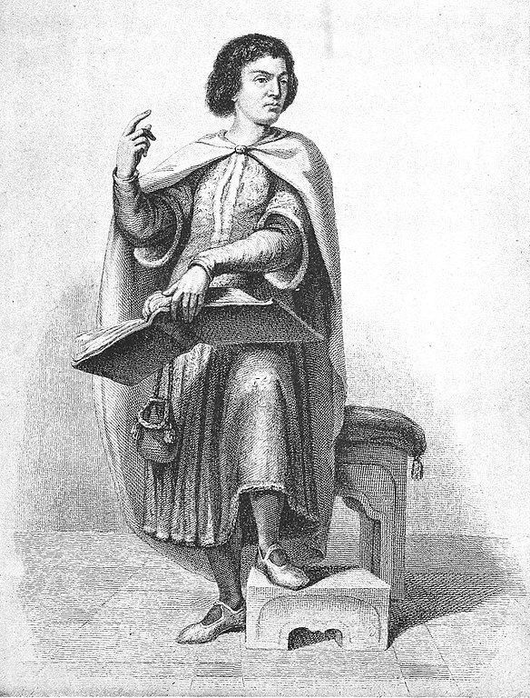

Пьер Абеляр
1079 г. – 21 апреля 1142 г.

Детство и юность
Пьер Абеляр — один из известнейших философов и поэтов Франции — родился в 1079 году в деревне Пале близ города Нанта в благородной рыцарской семье бретонского феодала Беренгера. Мальчик был старшим сыном в семье. На правах первородства Пьер должен был унаследовать родовое поместье и рыцарское звание своего отца, но благородно отказался от всех привилегий в пользу младших братьев. Невероятная пытливость, стремление к познанию себя и окружающего мира побудили юного Пьера всецело отдаться изучению наук.
Философия Абеляра
Философские взгляды
Пьер Абеляр рационализировал отношения веры и разума. Он считал понимание обязательным условием веры – “понимаю, чтобы верить”.
Пьер Абеляр выступал с критикой авторитетов церкви, ставил под сомнение безусловную истинность их работ. Он считал безусловной лишь непогрешимость и истинность Священного Писания. Теологические измышления отцов Церкви подвергал радикальному сомнению.
Пьер Абеляр считал, что существует две истины. Одна из них – истина о невидимых вещах, находящихся за пределами реального мира и понимания человека. Понимание ее приходит посредством изучения Библии.
Однако, истину достичь, по мнению Абеляра, можно также путем диалектики или логики. Петр Абеляр подчеркивал, что логика работает с языковыми понятиями и способна помочь с истинной высказывание, а не с истинной вещей. Таким образом, мы можем определить философию Пьера Абеляра как критический лингвистический анализ. Также с уверенностью можно сказать, что Пьер Абеляр решает проблемы с точки зрения концептуализма.
Универсалии, согласно Пьеру Абеляру, не существуют в реальности как таковые, они существуют только в божественном уме, однако они обретают статус бытия в сфере интеллектуального познания, образуя “концептуальный мир”.
В процессе познания человек рассматривает различные аспекты и путем абстрагирования создает образ, которой можно выразить словом. По мнению Пьера Абеляра, слово имеет определенное звучание и одно или более значений. Именно в этом Абеляр видит возможную контекстуальную двусмысленность и внутреннюю противоречивость христианских текстов. Противоречивые и сомнительные места богословских текстов требуют анализа с помощью диалектики. В случае, когда противоречивость неустранима, Абеляр предлагал обращаться в поисках истины непосредственно к Священному Писанию.
Пьер Абеляр рассматривал логику как обязательный элемент христианского богословия. Поддержку своей точки зрения он находит в Евангелии от Иоанна:
Петр Абеляр противопоставлял диалектику софистике, которая не раскрывает истину, а прячет ее за переплетеньем слов.
Метод Пьера Абеляра предполагает выявление противоречий в теологических текстах, их классификацию и логический анализ. Выше всего Пьер Абеляр ценил возможность строить самостоятельные суждения, свободные от авторитетов. Не должно быть авторитетов, кроме Священного Писания.
Часто, находя противоречия в теологических текстах, Пьер Абеляр давал собственное толкование, разительно отличающееся от общепринятого. Конечно, это влекло за собой гнев ортодоксов.
Пьер Абеляр провозглашал принцип веротерпимости, объясняя расхождения в вероучениях тем, что Бог направляет язычников к истине разными путями, поэтому в любом учении может быть элемент истины. Этические взгляды Пьер Абеляра характеризуются стремлением отказаться от религиозного диктата. Сущность греха он определяет как осмысленное человеком намерение совершить зло или преступить божественный закон.
Личная жизнь
Славу Пьеру Абеляру принесли не лекции, а романтическая история, обусловившая любовь всей его жизни и ставшая причиной случившегося в дальнейшем несчастья. Избранницей философа неожиданно для него самого стала красавица Элоиза, которая была на 20 лет младше Пьера. Семнадцатилетняя девушка была круглой сиротой и воспитывалась в доме своего дядюшки каноника Фульбера, не чаявшего в ней души.
В своем столь юном возрасте Элоиза была не по годам грамотна и умела говорить на нескольких языках (латинский, греческий, древнееврейский). Пьер, приглашенный Фульбером для обучения Элоизы, влюбился в нее с первого взгляда. Да и его ученица преклонялась перед великим мыслителем и ученым, души не чаяла в своем избраннике и была готова на все ради этого мудрого и обаятельного мужчины.
Гениальный философ в этот романтический период проявил себя также в качестве поэта и композитора и писал для юной особы красивые песни о любви, тут же ставшие популярными.
О связи влюбленных знали все вокруг, но Элоизу, открыто называвшую себя любовницей Пьера, это нисколько не смущало; наоборот, она гордилась доставшейся ей ролью, ведь именно ее, круглую сироту, Абеляр предпочел красивым и знатным женщинам, увивавшимся подле него. Возлюбленный увез Элоизу в Бретань, где она родила сына, которого пара вынуждена была оставить на воспитание чужим людям. Своего ребенка они больше никогда не видели.
Позже Пьер Абеляр и Элоиза тайно поженились; если бы заключенный брак был предан огласке, то Пьер не смог быть духовным сановником и построить карьеру философа. Элоиза, отдав предпочтение духовному развитию мужа и его карьерному росту (вместо обременительного быта с детскими пеленками и вечными кастрюлями), скрывала свое замужество и по возвращении в дом дядюшки говорила, что является любовницей Пьера.
Взбешенный Фульбер не смог смириться с нравственным падением племянницы и однажды ночью вместе с помощниками проник в дом Абеляра, где его, спящего, связали и оскопили. После этого жестокого физического надругательства Пьер удалился в Сен–Денисское аббатство, а Элоиза постриглась в монахини в Аржантейском монастыре. Казалось бы, земная любовь, короткая и физическая, длившаяся два года, закончилась. В действительности она просто переросла в иную стадию – духовную близость, непонятную и недоступную многим людям.
Смерть
Абеляр умер в 1142 году. Он завещал свое тело той, кому оно по праву принадлежало, - Элоизе, чтобы она распорядилась им "по собственному усмотрению". Тело было похоронено в Параклете, и, выполняя волю покойного, аббатиса каждый день молилась об успокоении души своего возлюбленного. На двадцать втором году этих ежедневных молитв (Элоиза, как и Пьер, умерла в 63 года) Абеляр открыл свои объятия, чтобы принять в них супругу. Но, может быть, это только легенда. На одном из домиков для священнослужителей собора Нотр-Дам-де-Пари до сих пор красуется надпись: "Здесь жили Элоиза с Абеляром. Искренние возлюбленные. Драгоценные образцы для подражания. Год 1118".
Эта история стала символом высокого чувства и основой множества литературных сюжетов. Ж.Ж.Руссо, Дж.Мур, К.Фаррер, Р.Вайан, М.Цветаева, В.Шкловский в разные времена обращались к мифу об Абеляре и Элоизе. Имя Элоизы сделалось синонимом чувственной любви, а ее письма - эталоном, образцом для подражания влюбленных барышень многих последующих веков. Послания Элоизы были не по времени изящны, утонченны и психологичны.
Основные труды
Основные произведения Абеляра:
- Введение в теологию,
- Диалектика,
- Да и нет,
- Познай самого себя,
- История моих бедствий.
Наибольшей популярностью пользуется произведение «История моих бедствий». Это единственная дошедшая до нашего времени средневековая автобиография профессионального философа. Абеляр также был автором многочисленных гимнов и сборника любовных писем.